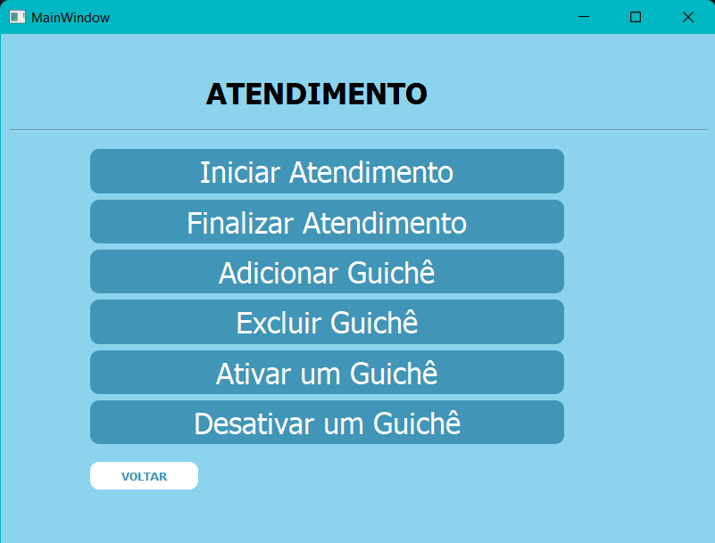
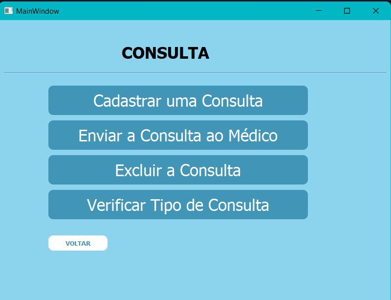
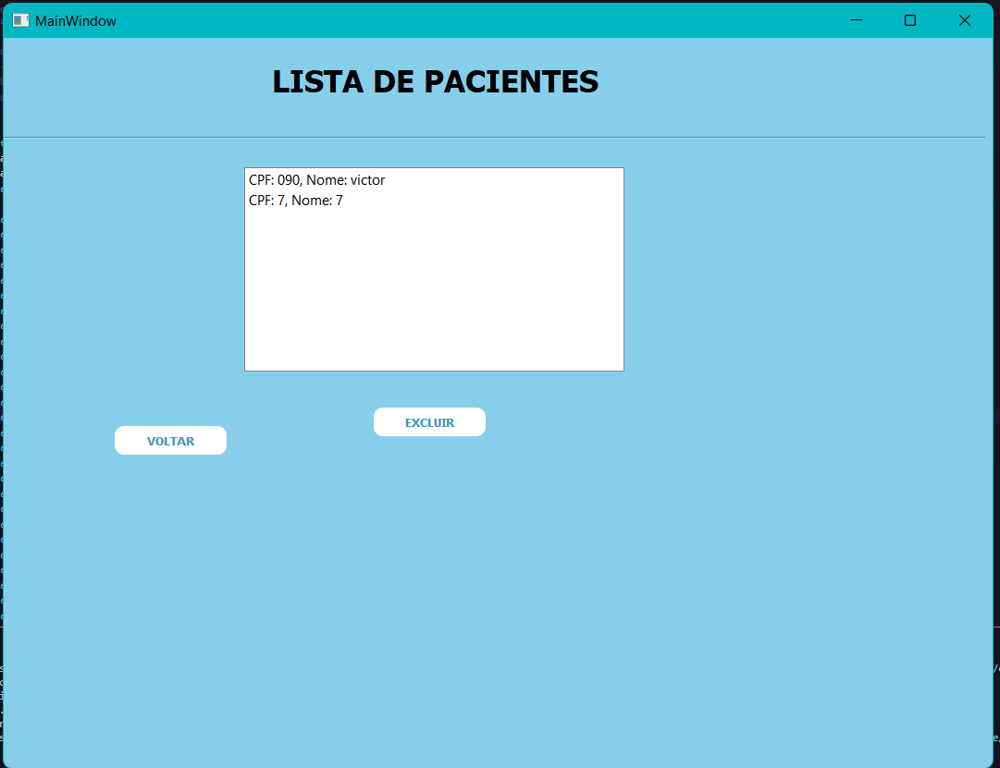
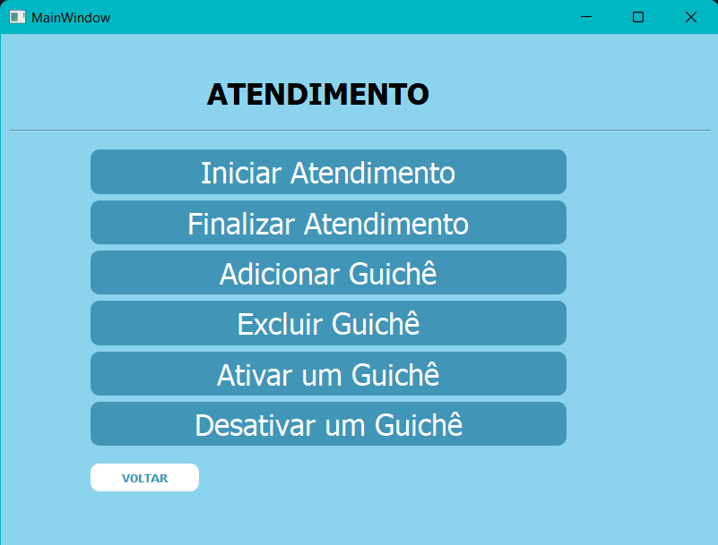
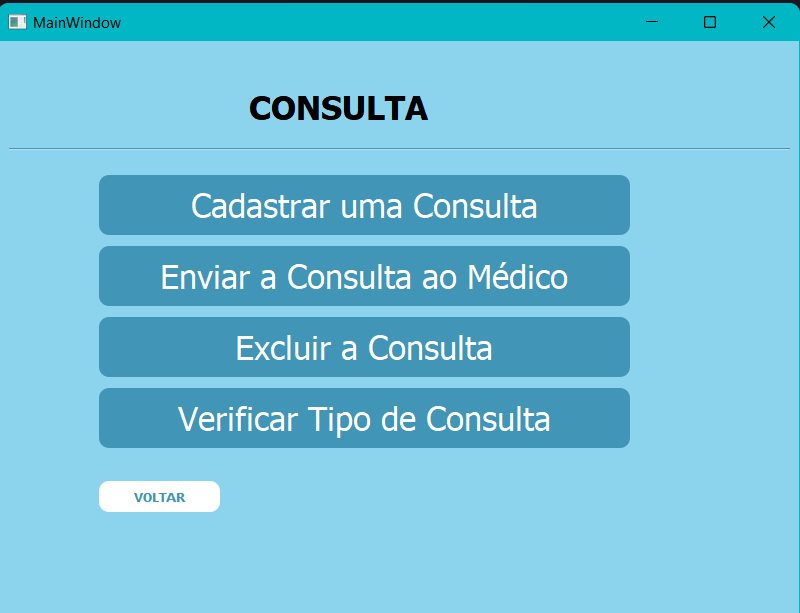
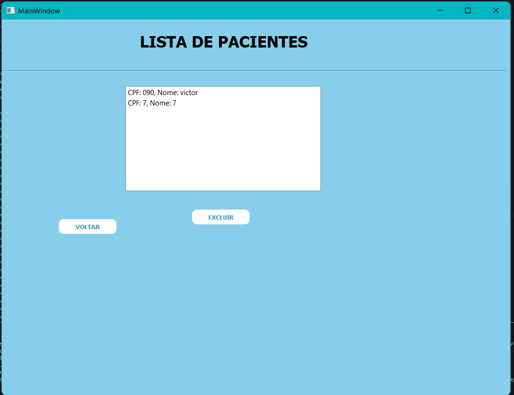

Projeto de Gerenciamento de uma Clínica
 





Este é o "Projeto de Gerenciamento de Clínica", onde desenvolvi um sistema em python para facilitar o gerenciamento de uma clínica médica. O sistema permite o cadastro de médicos e recepcionistas, agendamento de consultas, controle do atendimento de clientes, envio de consultas para os médicos responsáveis pelo atendimento dos pacientes.
O projeto foi desenvolvido utilizando as tecnologias python, com integração a um banco de dados MySQL para armazenamento de informações.
Espero que você goste do projeto e fique à vontade para entrar em contato caso queira mais informações!
Voltar para Home